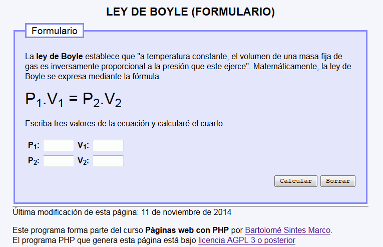
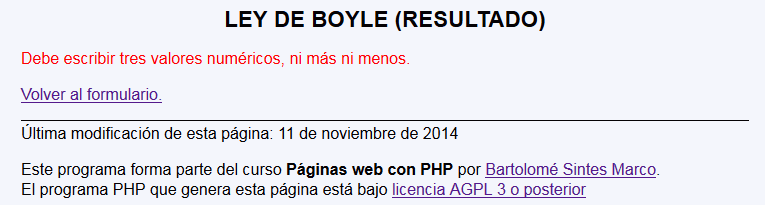
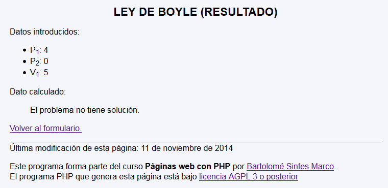
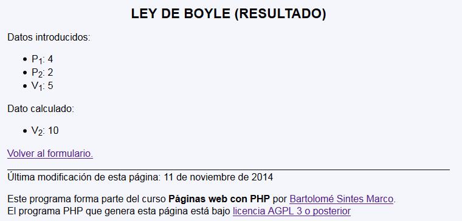

Ley de Boyle - Ejemplo de programa
Nota: El día del examen los alumnos no tienen acceso a este ejemplo, solamente tienen acceso a las capturas del apartado anterior.
Un ejemplo de programa puede probarse en la ventana siguiente:
En este ejercicio se debe crear un programa que calcule la presión o temperatura de un gas basándose en la Ley de Boyle




<h1>Ley de Boyle (Resultado)</h1>
<p>Datos introducidos:</p>
<ul>
<li>P<sub>1</sub>: 5</li>
<li>P<sub>2</sub>: 10</li>
<li>V<sub>1</sub>: 6</li>
</ul>
<p>Dato calculado:</p>
<ul>
<li>V<sub>2</sub>: 3</li>
</ul>
Nota: El día del examen los alumnos no tienen acceso a este ejemplo, solamente tienen acceso a las capturas del apartado anterior.
Un ejemplo de programa puede probarse en la ventana siguiente: